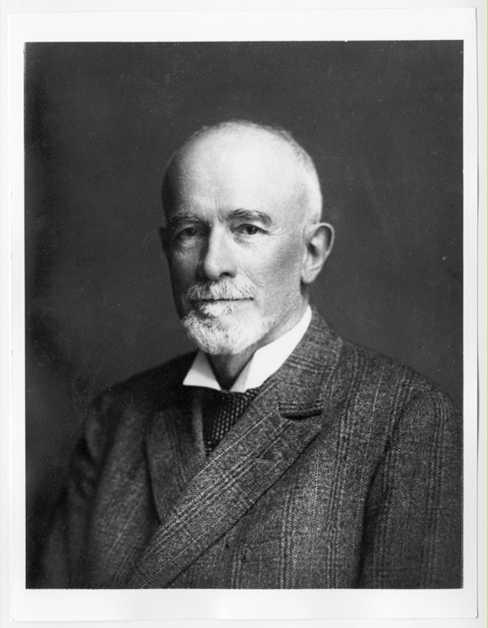

First Question:
How does the study of Renaissance evolve during time? Are there specific moments or some evolutions during history in which the study of Renaissance either spread or stopped for some reasons?
here goes the explanation
